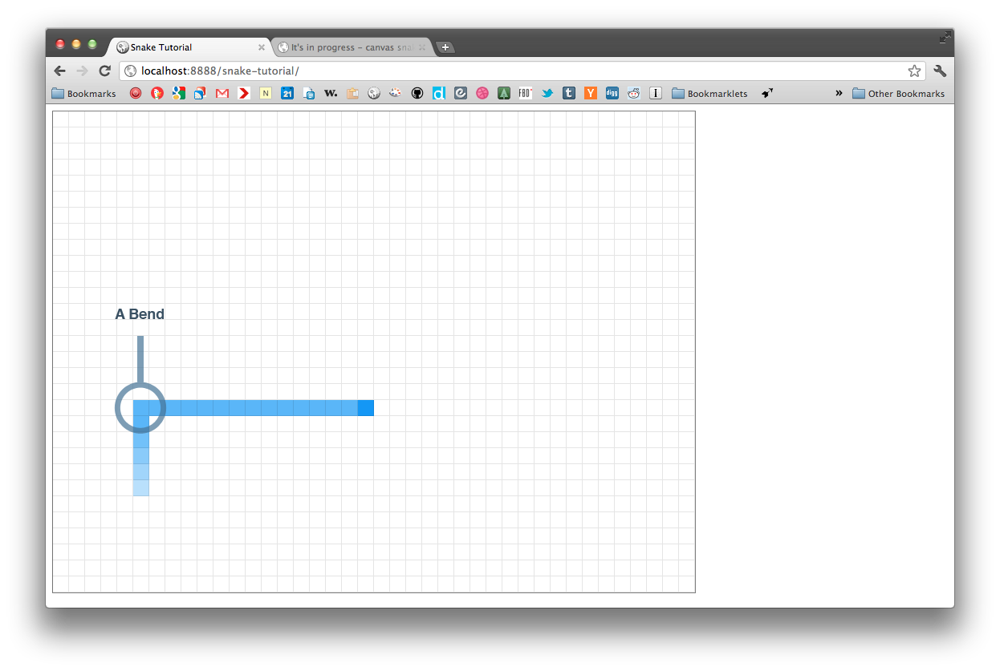

Recently I've been spending the majority of my time in Vim rather than Photoshop, so I thought I'd write up my recent snake project which is written using the canvas API.
What makes canvas cool is it can do stuff like video manipulation with just plain old javascript. In fact, you're able to write an arcade game like pacman in 1200-ish lines of (raw) javascript. If that sounds like too much, there are a couple of libraries around now that would cut down the amount of code you need to write significantly.
Seeing lots of people write cool things with javascript and the canvas API made me curious (read: I had to make something with canvas for university), so I set about writing the old but addictive game snake.
Note: If you just want to poke around with the finished code, you can download the code here (zip).
The tags for the canvas element are rather simple to remember:
<canvas id="canvas" width="800" height="600"></canvas>
Easy right? In context:
<!doctype html><html><head><title>Snake Tutorial</title><!-- jQuery :3 --><script type="text/javascript" src="https://ajax.googleapis.com/ajax/libs/jquery/1.7.0/jquery.min.js"></script><!-- Our scripts --><script type="text/javascript" src="scripts.js"></script></head><body><canvas id="canvas" width="800" height="600" style="border: 1px solidgray"></canvas></body></html>
Time to start writing the javascript that's going to draw stuff on the canvas. I'll be using jQuery because I'm lazy. I'll also be writing using the module pattern, to keep things nice and tidy.
Every game is built on a loop that usually consists of three parts:
Here we call ``snake.init()`` once which then calls `tick()` . The ``tick()`` function sets a timeout that calls the ``tick()`` function again after 100ms. As the timeout calls itself, we've created a loop that updates every 100ms.
// Our namespacevar snake = function() {
function tick() {
console.log( "tick" );
/*** This timeout will call its parent function, tick(), ever 100ms, thus* looping on itself*/setTimeout( function() { tick() }, 100 );}
return {
/*** Init** Accessed via snake.init(), this function is a handle for the* snake namespace.*/init : function() {
/*** Here we refer to the tick() fuction within the snake namespace.* We only want to call init() once, so tick() will have to loop on* itself*/tick();}
};
}();
snake.init();
});
Clearing the canvas can be kept simple as snake isn't very graphically demanding, even when it's written using the canvas API. When working directly with the canvas, we must reference its draw context and to do that we need to reference the canvas itself. The actual clearing occurs at the beginning of `tick()` as we'll want to draw onto a blank canvas.
// Our namespacevar snake = function() {
/*** canvas** Selects canvas element via ID canvas.* Canvas holds our drawing plane.** @type DOM object*/var canvas = document.getElementById( 'canvas' );
/*** draw** The drawing plane for canvas. This is what we manipulate when* drawing/clearing stuff. Example:** draw.fillRect( 20, 20, 100, 100 );** Draws a rectangle at x:20, y:20 with a width of 100px and a height* of 100px.*/var draw = canvas.getContext( '2d' );
function tick() {
// Clear the entire canvasdraw.clearRect( 0, 0, canvas.width, canvas.height );
console.log( "tick" );
/*** This timeout will call its parent function, tick(), ever 100ms, thus* looping on itself*/setTimeout( function() { tick() }, 100 );}
return {
/*** Init** Accessed via snake.init(), this function is a handle for the* snake namespace.*/init : function() {
/*** Here we refer to the tick() fuction within the snake namespace.* We only want to call init() once, so tick() will have to loop on* itself*/tick();}
};
}();
snake.init();
});
Snake is a grid based game. Each body segment, the head, and the fruit line up on the grid which allow the player to predict where the snake is going to turn in relation to when they press a key. Before we can write code that updates coordinates and draws the snake, we need to define how big each grid segment is going to be.
I've found segments of 20x20 work well. Place this code below our `draw` variable.
/*** Unit** This is the 'unit' of measure that defines the grid of our snake* game.*/var unit = 20;
The other thing we have to do before we can start drawing & updating our snake is to setup a coordinate system.
The snake has to move along our grid and we will also have to check for collisions later on. Any segment on the grid is defined by `x` and `y` coordinates. `x` being how far a segment is along the x-axis and `y` being how far a segment is down the y-axis.
/*** Coordinates** Array holds x and y coordinates for our snake's head*/var coords = new Array();coords = generateRandomCoords();
You'll notice we assign the returned value of `generateRandomCoords()` to ``coords`` . This is so spawning of our snake is random at the start of every game.
How `generateRandomCoords()` works:
/*** Generate Random Coords** Generates random x & y coordinates in multiples of our 'unit'.** @return array[ int, int ]*/function generateRandomCoords() {/*** The functions:* Math.round() is used to round a number to its nearest whole* number. We do this because pixels can only be whole numbers.** Math.floor rounds the number *down* to its nearest whole number.** Math.random() generates a random number between 0 and 1.** What's going on:** We want to generate a random number between 0 and the width* of the canvas.** If we just multipled Math.random() by* canvas.width we might get a number at the extreme right of* the canvas. Shapes are drawn from the top-left, so an* x-coordinate at the far right of the canvas will cause our* shape to be drawn off-screen. To counter this, we remove* almost an entire unit's value from the canvas.width value.** Math.random() * (canvas.width - ( unit - 1 ) )** Once we've got our base value, we round it down to a whole* number and then divide that by our unit, in turn rounding* that to a whole number. The reason we do this is because we* only want to generate values that are multiples of our unit.** Math.round(* Math.floor(* Math.random() * (* canvas.width - ( unit - 1 )* )* )* / unit* )** To finish we then multiply this rounded figure up again by* the unit so we have a value that can represent any point on* the canvas given that it's a multiple of our unit.** Math.round(* Math.floor(* Math.random() * (* canvas.width - ( unit - 1 )* )* )* / unit* )* * unit;*/var x = Math.round( Math.floor( Math.random() * ( canvas.width - ( unit - 1 ) ) ) / unit ) * unit;var y = Math.round( Math.floor( Math.random() * ( canvas.height - ( unit - 1 ) ) ) / unit ) * unit;
return [ x, y ];}
To create the illusion of animation, we need to update these generated coordinates every time the game loops.
Starting simply, we can just increment the x-coordinate.
/*** Update Coordinates** Increments x coordinate by unit** @param array[x, y]*/function updateCoords( origin ) {
// Increment our x coordinateorigin[0] += unit;
/*** If the x coordinate on the next tick will be more than our* canvas' width ( i.e. off-screen ) reset it to 0, moving it to the* far left of the canvas.*/if( origin[0] + unit > canvas.width ) {origin[0] = 0;}}
Of course, we now need to draw in the head of the snake based on these coordinates.
/*** Draw Snake** Draws rectangle(s) onto the canvas when given x and y coords in an* array.** @param array[x, y]*/function drawSnake( origin ) {// The head of our snakedraw.fillStyle = "rgb( 20, 151, 245)";draw.fillRect( origin[0], origin[1], unit, unit );}
We also need to call these functions back in the game loop so they update.
function tick() {
// Clear the entire canvasdraw.clearRect( 0, 0, canvas.width, canvas.height );
updateCoords( coords );drawSnake( coords );
/*** This timeout will call its parent function, tick(), ever 100ms, thus* looping on itself*/setTimeout( function() { tick() }, 100 );}
If you now have a blue block moving across the canvas along the x-axis, have a cup of tea. If you don't, your code should look something like this.
Adding directions to our snake game consists of two main parts:
/*** tock** Bool that helps keep track of whether coords have been modified but* tick() hasn't updated yet.*/var tock = true;
/*** keys** Array holds a list of keycodes** [ w, up arr ], [ a, left arr ], [ s, down arr ], [ d, right arr ]*/var keys = [ [ 87, 38 ], [ 37, 65 ], [ 40, 83 ], [ 39, 68 ] ];
/*** direction** String keeps track of direction.** Up : 'up'* Left : 'left'* Down : 'down'* Right : 'right'**/var direction = 'right';
In snake, the player can change the snake's direction via keypress every time the game loops. This means we have to listen for that keypress within the loop:
function tick() {
// Clear the entire canvasdraw.clearRect( 0, 0, canvas.width, canvas.height );
/*** We only want the player to be able to issue one direction command* per tick.*/tock = true;
// Listen for keypress$( document ).keydown( function( e ) {changeDirection( e );});
updateCoords( coords );drawSnake( coords );
/*** This timeout will call its parent function, tick(), ever 100ms, thus* looping on itself*/setTimeout( function() { tick() }, 100 );}
When the player does press a key, `changeDirection()` is called.
/*** Change Direction** Modifies direction based on key press. Only listens to one keypress* per tock (reset in tick()).*/function changeDirection( e ) {
/*** Loop through all recorded keycodes in the keys array. If the key* pressed matches one of the keycodes then we'll prevent its* default function.*/for( i = 0; i < keys.length; i++ ) {if( e.which == keys[i][0] || e.which == keys[i][1] ) {e.preventDefault();}}
if( tock ) {
/*** Check the keycode for the pressed key against the keys in our* array.*/if( e.which == keys[0][0] || e.which == keys[0][1] ) { // Updirection = 'up';} else if( e.which == keys[1][0] || e.which == keys[1][1] ) { // Leftdirection = 'left';} else if( e.which == keys[2][0] || e.which == keys[2][1] ) { // Downdirection = 'down';} else if( e.which == keys[3][0] || e.which == keys[3][1] ) { // Rightdirection = 'right';}
tock = false;}}
Now we've defined our current direction, we want to modify the snake head coordinates according to the current direction. Building off of our original `updateCoords()` function gives us something like this:
/*** Update Coordinates** Moves snake's head based on direction. Also moves snake's head to the* other side of the canvas if the next coordinates cause it to go* off-screen.** @param array[x, y]*/function updateCoords( origin ) {
if( direction == 'up' ) {origin[1] -= unit;} else if( direction == 'left' ) {origin[0] -= unit;} else if( direction == 'down' ) {origin[1] += unit;} else if( direction == 'right' ) {origin[0] += unit;}
// Reset snakes head if it has gone out of boundsif( origin[0] < 0 ) {origin[0] = canvas.width - unit;} else if( origin[0] + unit > canvas.width ) {origin[0] = 0; // No need to add unit because head is drawn from topLeft}
if( origin[1] < 0 ) {origin[1] = canvas.height - unit;} else if( origin[1] + unit > canvas.height ) {origin[1] = 0; // No need to add unit because head is drawn from topLeft}}
If it all went well, your snake head should now be responding to directional input via WASD and arrow keys. If not, your code should look similar to this.
Time to make your snake look like a snake, with a snazzy new tail.
The tail consists of three parts:
We want our snake's body to 'lag-behind' the snake's head. If the snake turns from upwards to left we want there to be a bend in the body:

To do this, we need to maintain an array of body segments as well as an array of the head's past coordinates.
/*** Past coordinates** Array holds past coordinates for snake's head. The segments use this* for positioning.*/var pastCoords = new Array();
/*** Segments** Array used to keep track of the number of body segments the snake* has.*/var segments = new Array();segments.push( '1' ); // It doesn't matter what values you add to the array
Here I've pushed a value to the `segments` array straight away. This acts as the initial body for the snake.
We're going to want to update the `pastCoords` array on every tick. This needs to be done before we update the head's coordinates, so place a call to `updatePastCoords()` at the start of the `updateCoords()` function.
How `updatePastCoords()` works:
/*** Update Past Coordinates** Manages pastCoords array*/function updatePastCoords() {/*** Push an array containing x & y coordinates to the pastCoords* array.** pastCoords.push( [x, y] )*/pastCoords.push( [ coords[0], coords[1] ] );
/*** We need to trim the pastCoords array when it gets too long.** If the length of our pastCoords array is more than the length of* our snake's body...*/if( pastCoords.length > segments.length ) {
/*** Remove 1 element of our array from index 0.** pastCoords[0] == 'foo'* pastCoords[1] == 'bar'* pastCoords[2] == 'baz'** becomes:** pastCoords[0] == 'bar'* pastCoords[1] == 'baz'*/pastCoords.splice( 0, 1 );}}
Now we've got all the data we need, we can draw our tail, which is rather simple:
/*** Draw Snake** Draws rectangle(s) onto the canvas when given x and y coords in an* array.** @param array[x, y]*/function drawSnake( origin ) {// The head of our snakedraw.fillStyle = "rgb( 20, 151, 245)";draw.fillRect( origin[0], origin[1], unit, unit );
// body segmentsfor( i = 0; i < segments.length; i++ ) {draw.fillRect( pastCoords[i][0], pastCoords[i][1], unit, unit );}}
This gives us a long line of the same coloured blocks, which looks rather rubbish. Making it look slightly less rubbish is rather easy (read:fun to experiment with). Simply replace our body segments code with:
// body segmentsfor( i = 0; i < segments.length; i++ ) {if( i < 5 ) {/*** We're adjusting our fill style based on the loop's index.** The fourth value in rgba() stands for alpha, which is how* transparent the fill is. The closer the alpha value is to* 1, the less transparent it is.*/draw.fillStyle = "rgba( 20, 151, 245, 0." + ( i + 3 ) + " )";} else {draw.fillStyle = "rgba( 20, 151, 245, 0.7 )";}draw.fillRect( pastCoords[i][0], pastCoords[i][1], unit, unit );}
Having one head and one body segment is OK, but having 8 segments is much better! For testing purposes only, add this code after our call to `drawSnake()` in our `tick()` function:
if( segments.length < 8 ) {segments.push( 'foo' );}
That's a bit more snake like right? Not working for you? Here's what we've got so far.
Adding fruit functionality to our snake game consists of four key parts:
We need to know whether the fruit exists or not on every frame, so we're going to need to add a call to a function into our loop after we've drawn the snake:
function tick() {
// ...
updateCoords( coords );drawSnake( coords );fruitHandler();
/ ...}
We'll also need to maintain an array of fruit coordinates and keep track of whether the fruit exists with a boolean.
/*** fruit exists** If fruit exists: bool should be true.*/var fruitExists = false;
/*** fruit coordinates** Array contains the fruit's coordinates.** @values array[ x, y ];*/var fruitCoords = new Array();
How `fruitHandler()` works:
/*** Fruit Handler** Function checks whether snake has eaten fruit and calls generation of* fruit when it there is no fruit on page.*/function fruitHandler() {// If fruitExists is false...if( ! fruitExists ) {// Just like spawning the snake headfruitCoords = generateRandomCoords();fruitExists = true;}
// At this point we always have a fruitdraw.fillStyle = "green"; // It's an apple!draw.fillRect( fruitCoords[0], fruitCoords[1], unit, unit );}
Before the snake can eat the fruit and grow, it needs to know whether it has the fruit in its mouth. To do this, we need to check the coordinates of the head against the coordinates of the fruit. The `hitCheck()` function:
/*** Hit Check** This function checks whether two sets of coordinates (and their* widths|heights) are overlapping each other.** Each parameter is an array consisting of:** [0] the x|y coordinate of the shape* [1] the x|y coordinate plus the width|height of the shape.** How it's used:** var snakeHead = [ [ coords[0], coords[0] + unit ], [ coords[1], coords[1] + unit ] ];* var fruit = [ [ fruitCoords[0], fruitCoords[0] + unit ], [ fruitCoords[1], fruitCoords[1] + unit ] ];** var hitX = hitCheck( snakeHead[0], fruit[0] );* var hitY = hitCheck( snakeHead[1], fruit[1] );** var hit = hitX && hitY;** if( hit ) {* Do stuff* }*** @param array[ x|y, x+w|y+h ]* @param array[ x|y, x+w|y+h ]* @return bool*/function hitCheck( coords, fruitCoords ) {
if( coords[0] < fruitCoords[0] ) {var a = coords;} else {var a = fruitCoords;}
if( coords[0] < fruitCoords[0] ) {var b = fruitCoords;} else {var b = coords;}
/*** If the smallest given x|y+w coordinate is more than the biggest* given x|y coordinate** OR** The smallest given x|y coordinate is equal to the largest given* x|y coordinate.** They're overlapping*/if( a[1] > b[0] || a[0] === b[0] ) {return true;} else {return false;}
}
We then call this function inside our `fruitHandler()` :
/*** Fruit Handler** Function checks whether snake has eaten fruit and calls generation of* fruit when it there is no fruit on page.*/function fruitHandler() {// If fruitExists is false...if( ! fruitExists ) {// Just like spawning the snake headfruitCoords = generateRandomCoords();fruitExists = true;}
// At this point we always have a fruitdraw.fillStyle = "green"; // It's an apple!draw.fillRect( fruitCoords[0], fruitCoords[1], unit, unit );
// Check whether the snake has eaten the fruit!var snakeHead = [ [ coords[0], coords[0] + unit ], [ coords[1], coords[1] + unit ] ];var fruit = [ [ fruitCoords[0], fruitCoords[0] + unit ], [ fruitCoords[1], fruitCoords[1] + unit ] ];
var hitX = hitCheck( snakeHead[0], fruit[0] );var hitY = hitCheck( snakeHead[1], fruit[1] );
var hit = hitX && hitY;
if( hit ) {// Clear the fruit from the canvasdraw.clearRect( fruitCoords[0], fruitCoords[1], unit, unit );fruitExists = false;
// Draw in the snake's head (we just cleared that section of the canvas)draw.fillStyle = "rgb( 20, 151, 245)";draw.fillRect( fruitCoords[0], fruitCoords[1], unit, unit );}}
Growing the snake is rather simple. Appending to the if-statement above:
// Grow the snake by adding to the segments arraysegments.push( toString( segments.length + 1 ) );
Speeding up the game is as simple as setting faster timeouts back in the loop. Here is our old timeout code:
/*** This timeout will call its parent function, tick(), ever 100ms, thus* looping on itself*/setTimeout( function() { tick() }, 100 );
If we replace 100 with a variable, we can then modify it when we're growing our snake in the `fruitHandler()` . The variable:
/*** tick speed** Int controls how fast the game "ticks". Starts at 100*/var tickSpeed = 100;
The modified timeout:
setTimeout( function() { tick() }, tickSpeed );
This is a rather crude way of speeding things up, so please experiment (appended to the if-statement in `fruitHandler()` ):
if( tickSpeed > 40 ) {tickSpeed -= 10;}
Two more steps left, if your code isn't working here's what I've got so far.
The penultimate step is to check whether the snake's head is eating part of its tail. Just like we did with the fruit, we're going to check whether the head is overlapping with any of the body segments:
/*** Tail Bite Handler** Checks to see whether snake has bitten itself.*/function tailBiteCheck() {var snakeHead = [ [ coords[0], coords[0] + unit ], [ coords[1], coords[1] + unit ] ];
// Loop over all of the segments in the snake's tailfor( i = 0; i < segments.length - 1; i++ ) {var tailSegment = [ [ pastCoords[i][0], pastCoords[i][0] + unit ], [ pastCoords[i][1], pastCoords[i][1] + unit ] ];
var hitX = hitCheck( snakeHead[0], tailSegment[0] );var hitY = hitCheck( snakeHead[1], tailSegment[1] );var hit = hitX && hitY;
if( hit ) {//...}}}
Just like the other functions, this needs to be called every time the game loops:
function tick() {// ...
updateCoords( coords );drawSnake( coords );fruitHandler();tailBiteCheck();
// ...}
You'll see in our `tailBiteCheck()` function there's an empty if-statement that runs if the snake is eating part itself. When this occurs, we'll want to reset the game back to its starting conditions.
/*** Reset** Resets game*/function reset() {
alert( "Game Over" );
// Clean our arrays and reset the tickSpeedsegments.splice( 1, segments.length - 1 );pastCoords.splice( 1, pastCoords.length - 1 );tickSpeed = 100;
// Generate new coordinates for the snakevar newCoords = generateRandomCoords();coords = newCoords;}
``reset()`` will need to be called in the `tailBiteCheck()` function, so:
// ...
if( hit ) {reset();}
// ...
Here's all of the javascript we've written so far.
Scoring requires us to return to our html file and append some code that will allow us to show the player their score:
<canvas id="canvas" width="800" height="600" style="border: 1px solidgray"></canvas>
<section id="scoring"><p>Score: <span class="score">0</span></p><p>High Score: <span class="high-score">0</span></p></section>
Back in our javascript file, we need to setup the variables required for scoring:
/*** Score Increment** The amount the score is incremented for every fruit eaten*/var scoreIncrement = 1;
/*** Player's Score** Int keeps track of player's current score*/var score = 0;
/*** high score** Int keeps track of player's highest score*/var highScore = 0;
The scoring aspect of snake is really simple. When the snake eats a fruit, the `score` is increased by the amount defined in our `scoreIncrement` variable. If this score is now more than the highest recorded score, update our `highScore` variable as well.
In practice, our update score function looks like this:
/*** Update Score** This updates the player's score each time the snake eat's something.**/function updateScore() {// Increment the score and update our HTMLscore += scoreIncrement;$( '.score' ).html( score );
// If our score is the highest yet, update our high scoreif( score > highScore ) {highScore = score;$( '.high-score' ).html( highScore );}}
The `updateScore()` function needs to be called when the snake has eaten a fruit, so back in our `fruitHandler()` if-statement:
// ...
if( hit ) {
// ...
// Speed it upif( tickSpeed > 40 ) {tickSpeed -= 10;}
updateScore();}
// ...
Finally, we need to add some code to our `reset()` function that resets the score upon game over:
function reset() {
// ...
tickSpeed = 100;
// Reset scorescore = 0;$( '.score' ).html( score );
// ...
}
That's it! You've made snake in HTML5 Canvas. All of the code is available for download (zip).
There are a couple of libraries that provide hooks which make writing canvas based experiences much faster, easier, and perhaps less frustrating.